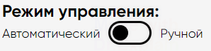
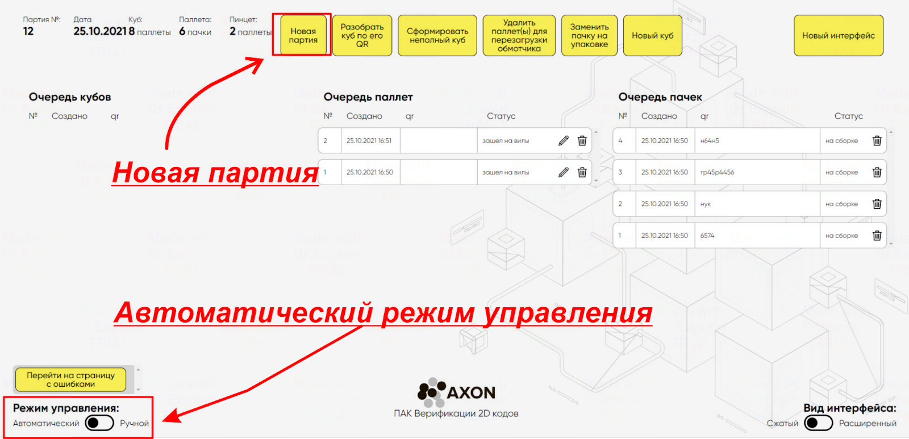
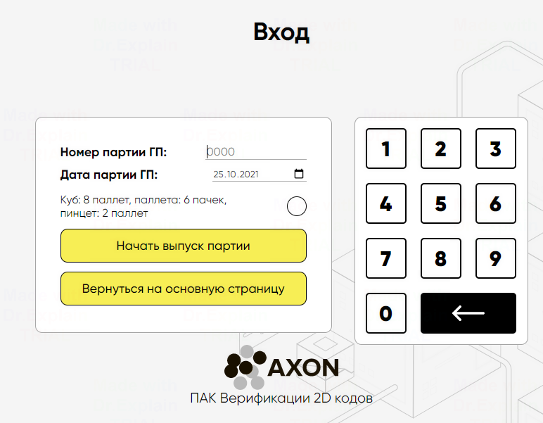
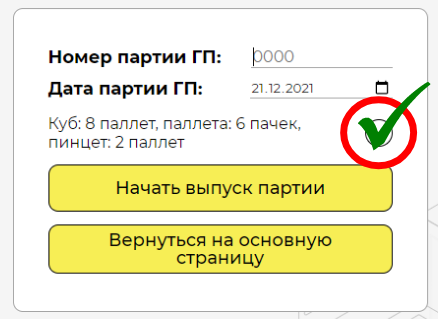
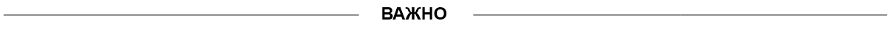

НАЧАЛО РАБОТЫ: СОЗДАНИЕ НОВОЙ ПАРТИИ
Обязательно, перед началом работы в системе, удостоверьтесь что система работает в автоматическом режиме. 
Работа с системой начинается с кнопки “Новая партия”. Инициировать процесс создания новой партии необходимо при смене типа продукции или изменении смены.

Порядок работы:
1.Выберите опцию “Новая партия”, которая расположена в верхней части главного окна системы.
2.В открывшемся окне, введите все данные новой партии и нажмите на кнопку запуска партии, заранее выбрав состав Куба.


Самая частая ошибка при заполнении окна, - пользователь забывает нажать кнопку состава Куба.


Будьте внимательнее при заполнении этого окна. Если вы допустили ошибку при создании партии, у вас есть время до появления первой пачки в пинцете. Для этого создайте новую партию с правильными данными.